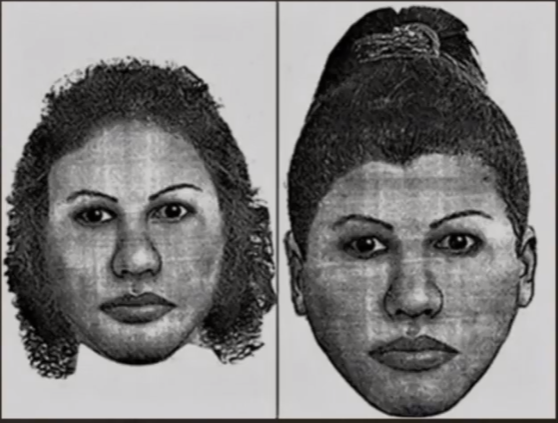

o que é Fake News?
Como o proprio nome indica Fake news são noticias falsas, A fake news mudou consideravelmente a maneira como
as pessoas obtem informações, já que uma fake news pode ser espalha em diferentes formatos como por exemplo
em audio,video ou texto que é o mais comum de se achar pela internet.
As fake news infelizmente são muito comuns nas redes socias, essas informações falsas são normalmente em
redes sociais porque existe um alcançe maior e logo depois a pessoa na maioria das vezes não procurar em
alguma outra fonte para verificar a veracidade da noticia. Uma rede sociais muito comum de se receber fake news é o WhatsApp
que normalmente a mensagem vem com um selo escrito "frequentemente encaminhada". Por isso é muito importante
prestar atenção na hora de divulgar e encontrar noticias pela internet.
De acordo com a pesquisa feita pela empresa de cibersegurança Kaspersky, 62% dos Brasileiros não sabem reconher uma fake news.
O poder de uma Fake News
Um caso que tormou proporções tragicas foi o de uma dona de casa chamada fabiane que morava em guarajá-litora
paulista, no ano de 2014.Tudo aconteceu no bairro Morrinhos. Fabiane tinha saído de casa de bicicleta pra buscar a bíblia que havia
esquecido na igreja. Depois, ia para a casa de um parente. Mas, no meio do caminho, ela foi abordada por
pessoas que a confundiram com uma suposta sequestradora de crianças, que faria rituais de magia com elas. As
pessoas partiram pra cima de Fabiane - sem defesa. Ela foi espancada, arrastada pelo bairro, amarrada e
torturada. Tudo isso ocorreu por conta de boatos sobre a mulher que estaria sequestrando crianças surgiram
na internet uma semana antes desse ataque. Entre as publicações - o tal retrato falado que - na verdade - era relativo a um crime
cometido dois anos antes, na Zona Norte do Rio de Janeiro.
Foto de Fabiane:
Retrato da mulher que foi confundida:

Consequência do caso
Na época, as pessoas responsáveis pela divulgação das informações falsas não foram responsabilizadas. No ano de 2017, 3 anos depois
do caso de Fabiane - foi criado um projeto de lei pra tipificar - no Código Penal - a divulgação de notícia falsa.
Ele está no Congresso Nacional ainda aguardando votação.